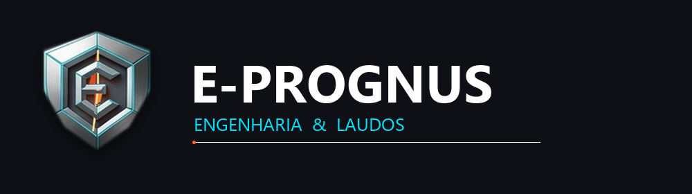
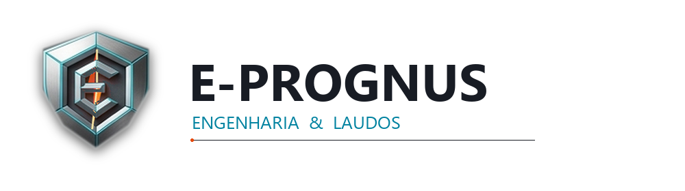
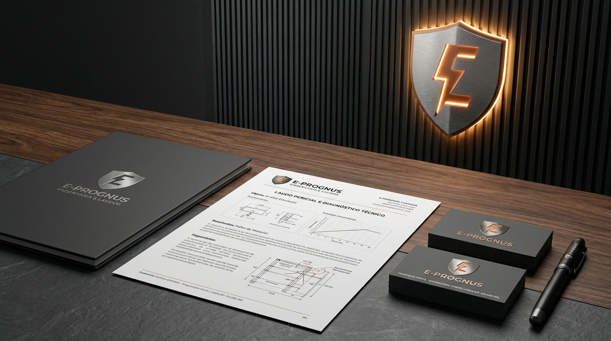
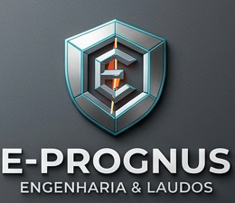

ENGENHARIA & LAUDOS
Guia de padrões de identidade corporativa, paleta cromática, especificações tipográficas e aplicações da marca oficial aprovada.
Representa a solidez e a blindagem jurídica e patrimonial dos laudos. As bordas chanfradas e as linhas em ciano transmitem a precisão dos ensaios metrológicos.
Lapidado em planos isométricos de titânio, representa Engenharia, Eletricidade e E-Prognus, com imponência executiva incomparável.
Posicionado com extrema discrição no miolo do escudo, representa a alta voltagem e o aterramento sem competir com a elegância institucional do brasão.

E-PROGNUS_Logo_Horizontal_Fundo_Escuro.png
Ideal p/ Site & Telas

E-PROGNUS_Logo_Horizontal_Fundo_Claro.png
Ideal p/ Laudos A4 & Impressos

Dossiê pericial A4, cartões em papel grafite com relevo metálico e placa de parede iluminada.

Escudo de titânio chanfrado com raio sutil de energia embutido na cavidade interna do 'E'.